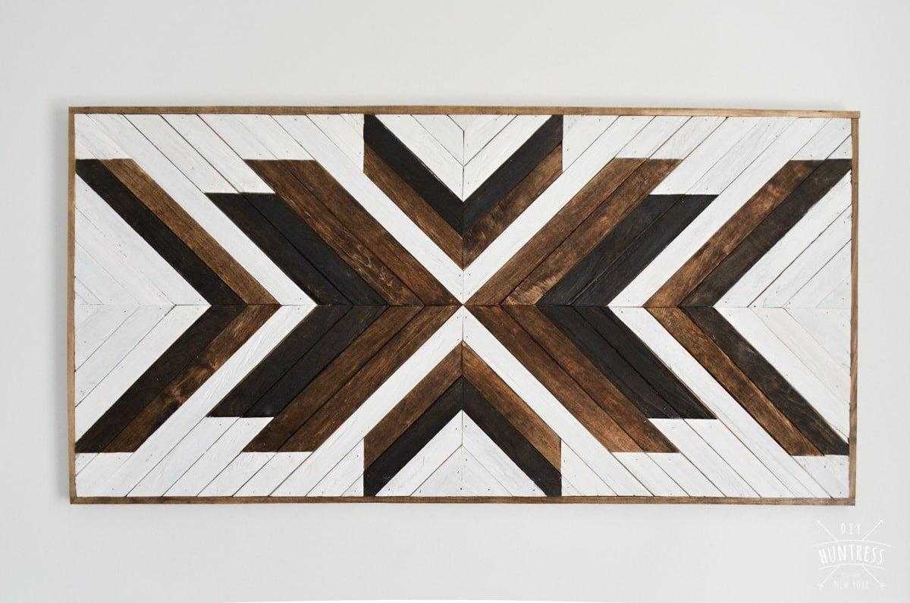

Diy geometric kids room art
First Monthly Makers theme this year is " c o n t r a s t " - a wide theme with many interpretations. As we`re redecorating the kids room I wanted to make some playful kids art. This geometric fox poster is so easy to make and can be varied to other shapes and colors.
DIY Bamboo Stick Sunburst Mirror
Simple and stylish—our two favorite words when it comes to DIY projects. This craft accomplishes both. Create this DIY sunburst mirror for much cheaper than the mirrors you'd find a home goods store.
